Scholarly Network Analysis (SNA)
- An Introduction to the study of Scientific Research Networks
- Scholarly Network Analysis
- Biblimetric Analysis
Topic of this study
:arrow_right:Frame work :arrow_right:Data Source :link:
Data Source
WC=Operations Research & Management Science or WC= Engineering, Industrial or WC=Engineering, Manufacturing
限縮依據： 文件類型: ( ARTICLE OR REVIEW ) AND 國家/地區: ( TAIWAN )
時間範圍: 1975-2020。 索引: SCI-EXPANDED, SSCI。
records：15,859
Dec’21’2020
WC=Operations Research & Management Science or WC= Engineering, Industrial or WC=Engineering, Manufacturing
限縮依據： 文件類型: ( ARTICLE OR REVIEW ) AND 國家/地區: ( TAIWAN )
時間範圍: 1975-2020。 索引: SCI-EXPANDED, SSCI。
records：16,087
All contry records：421,924
Note:careful the download plain text format.
Source retrive
Since the Wos download have 500 records limited, so we have 32 plain txt files. Have 2 ways to
- biblioshiny
- webometric Analyst
biblioshiny can import raw files from the zip file( archive the plain txt files to zip ),then export to : Excel & R data format. also the webometric analyst can merge the multi text files to one (for vsoviewer need )
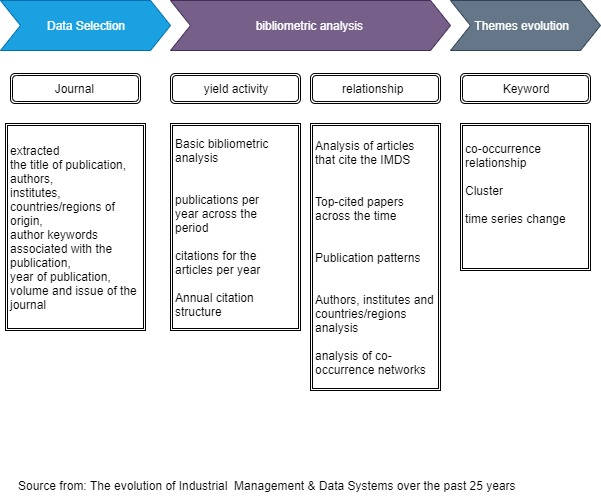
Scholarly Network Analysis (SNA)
An Introduction to the study of Scientific Research Networks
https://towardsdatascience.com/scholarly-network-analysis-22cd352c0f86


Intellectual structure Conceptual Structure (research front)
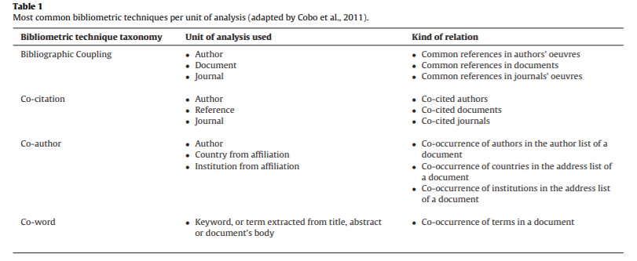
Basic bibliometric analysis
特別的設定

Timespan 1975~2020 Sources Journals 209 Documents 16,087 Average years from publication 12 Average citations per documents 21.13 Average citations per year per doc 1.865 References 246,458 DOCUMENT TYPES article 15244 article; proceedings paper 753 article; retracted publication 9 review 80 review; retracted publication 1 DOCUMENT CONTENTS Keywords Plus (ID) 12194 Author’s Keywords (DE) 34907 AUTHORS Authors 10211 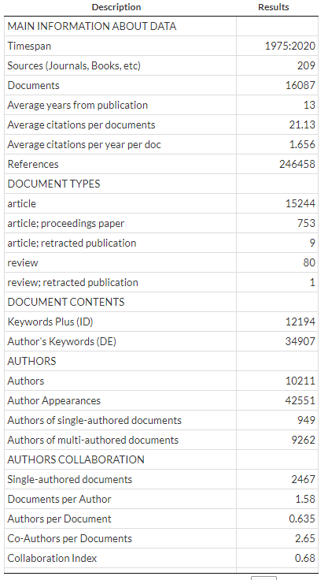
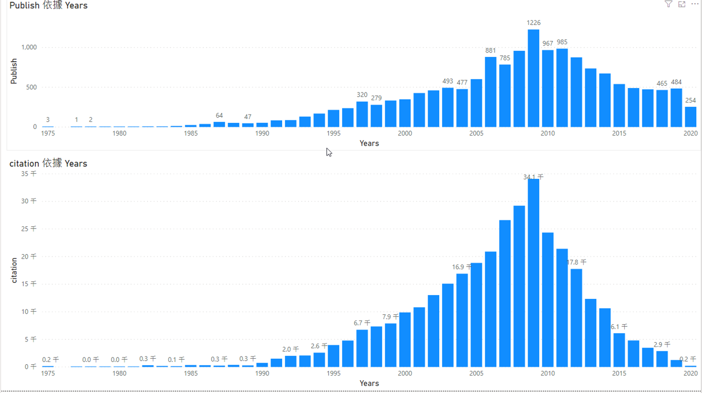
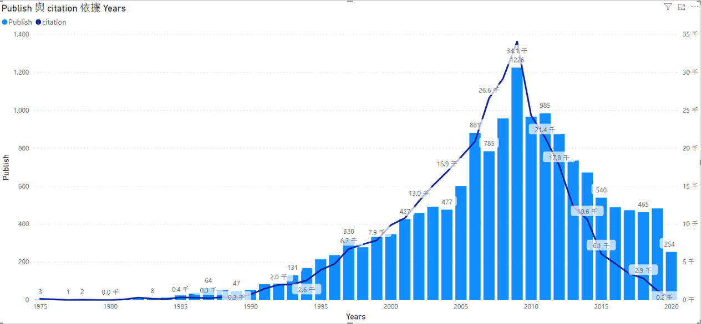
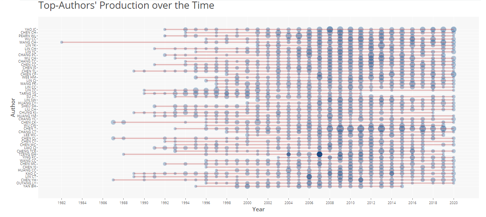
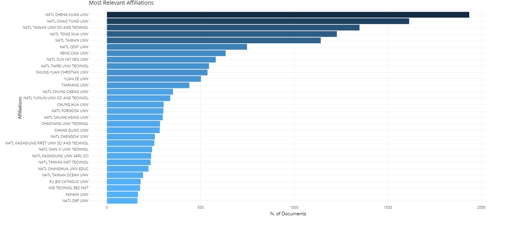

Conceptual Structure (research front)

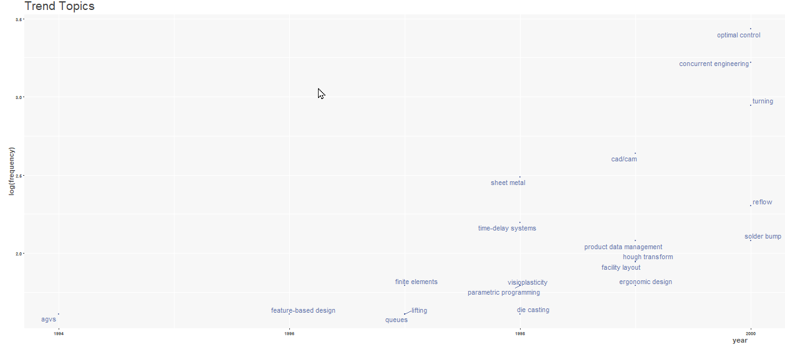
Author Keyword Trend 1975~2000
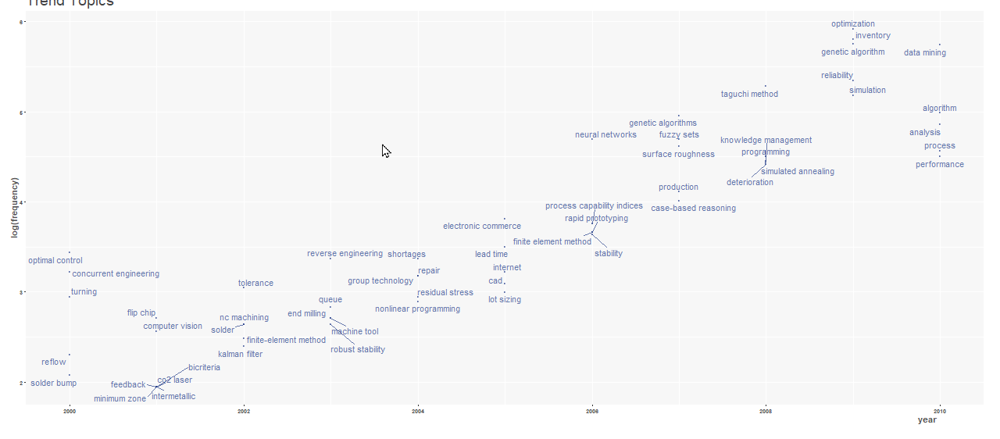
Author Keyword Trend 2000~2010
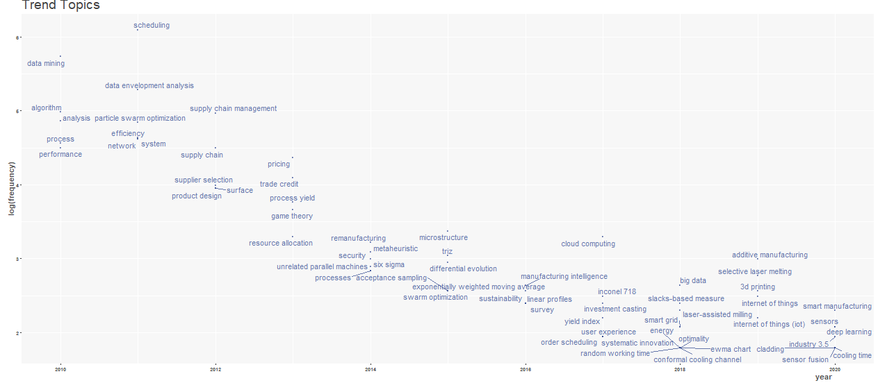
Author Keyword Trend 2010~2020
Author Keyword Thematic Evolution
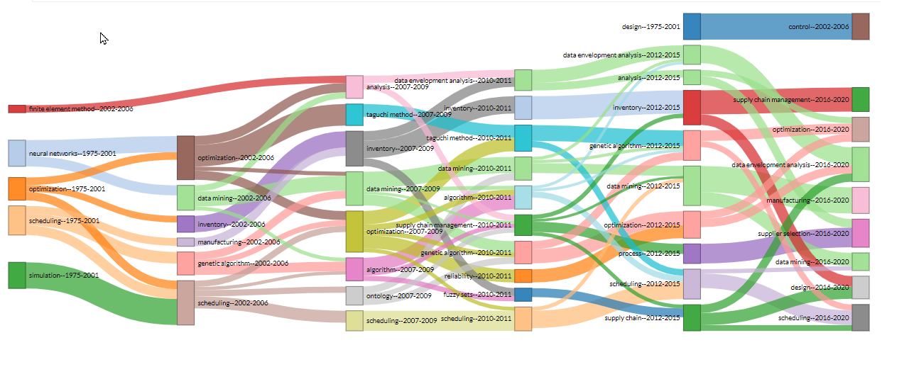